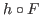
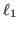
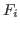
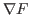

Next: About this document ...
Stefan M Wild
Manifold Sampling for L1 Nonconvex Optimization
Argonne National Laboratory
Mathematics and Computer Science Division
9700 S Cass Ave
Bldg 240-1151
Lemont
IL 60439
wild@anl.gov
Jeffrey Larson
Matt Menickelly
We introduce the manifold sampling algorithm for
unconstrained minimization of
a nonsmooth composite function

. By classifying points in the domain
of  into manifolds, the algorithm adapts search directions within a
trust-region framework based
on knowledge of manifolds
intersecting the current trust region.
into manifolds, the algorithm adapts search directions within a
trust-region framework based
on knowledge of manifolds
intersecting the current trust region.
We motivate this idea through a study of

functions, where the
classification into manifolds using zero-order information about the
constituent functions 
is trivial.
In this case, we show that both deterministic and stochastic versions of the
algorithm generate cluster points that are Clarke stationary.
Since the manifold sampling algorithm only requires approximations of the
Jacobian

at the trust-region center, the algorithm can also address
situations where  is defined by a simulation for which such derivative
information may not be available.
We present numerical results for different variants of the algorithm and
show that
using manifold information from points near the current iterate can improve
empirical performance.
is defined by a simulation for which such derivative
information may not be available.
We present numerical results for different variants of the algorithm and
show that
using manifold information from points near the current iterate can improve
empirical performance.
root
2016-02-22